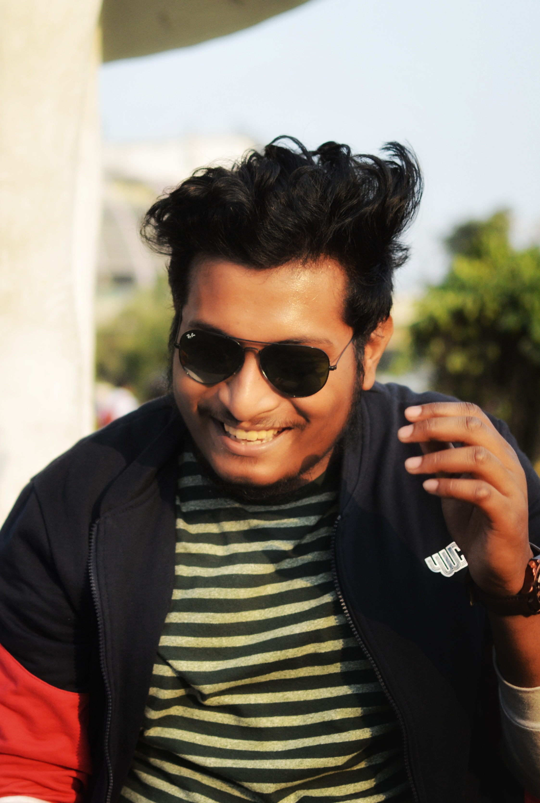
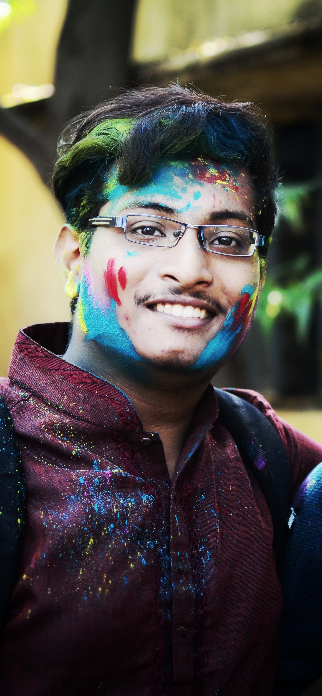
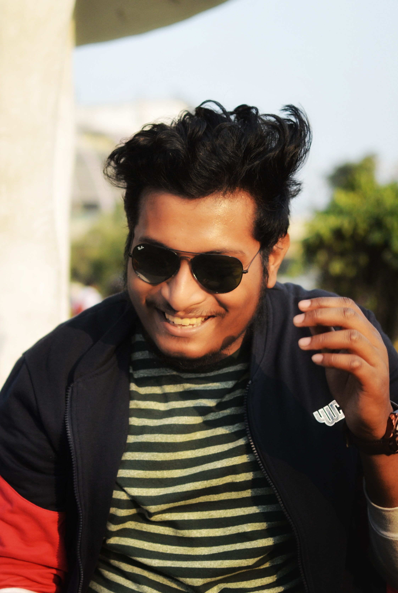
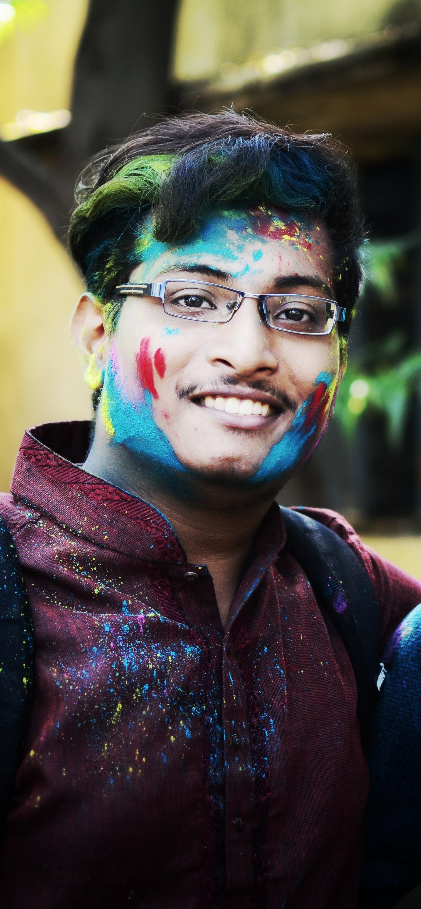

My Story
I was born in a small town ,outskirts of Ranchi ,Jharkhand in 24th oct . My childhood has been quite a normal one, besides being transfered from places to places .My father has a transferable job, so, that allowed me to meet new people around the country.This might be the reason why my friends say that i am kinda jolly and a fun loving person.
I had /have a very big passion for gaming. I still remember the days when i used to play games all the day.I got my glasses on when i was very young . As i grewn up i had developed my interests in sports,especially Football. Let me clear it out now , i dont have a fav footballer ,i just love to be immersed into the game.
 


